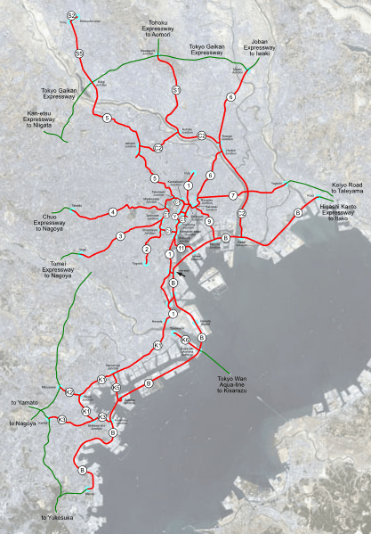

STORY TIME
This day we can sleep more, because the event of this day is the most special and the last, we are going to the highway in which the band know as midnight club did their races. One of the ex-member of this band is going to tell us the history of the band,
the cars that they drive... We felt the hotel al 3:00PM,to get to the highway around 5:00 PM, the ex-member will be there waiting us. First we are going to do their route, and then we are going to stop in a rest area-restaurant to tell
us the history of the band
